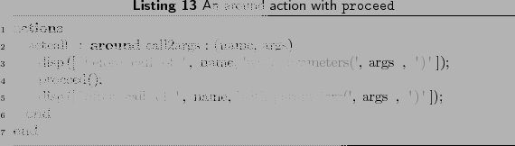

Next: Precedence Order Up: Actions Previous: Context Exposure Contents
Consider the before action given in Section 2.3.1, which is woven in just before the actual call to any function with 2 or more arguments. What if we want to manipulate the arguments before making such calls, or we want to add more arguments to the call, or we want to provide fewer arguments, or we want to make such a call more than one time, or we want to call some other function instead, or we just don't want to make such function calls?
The around actions are the answer to all the questions. An around action is executed instead of the actual join point matched. All the valid context information can be fetched in the around action and then used accordingly. The actual join point can still be executed from within an around action, using a special proceed call. The proceed function can be called any number of times or not at all.
The around actions can be used with all AspectMatlab supported pattern types, except some patterns inside the script files due to MATLAB semantics. The around actions on such join points require these join points to be moved into a separate function, which is not possible inside a script. Unlike before and after actions, around actions can return data. A special MATLAB variable, varargout, is used for this purpose; which allows us to return multiple arguments. The proceed takes care of the returning arguments, but varargout should be set manually in case there is no proceed. varargout is a list of output values, so it needs to be made sure that it contains as many values as the original join point would return.
For example, the around action given in Listing 12 captures all calls to foo and instead calls bar with the same arguments. A single value returned from bar is set in varargout variable.

|
Listing 13 shows the around version of the action actcall given in Listing 11. It simply prints out the function being called along with the arguments, before calling the proceed.
|
 |
Toheed ASLAM 2010-04-24